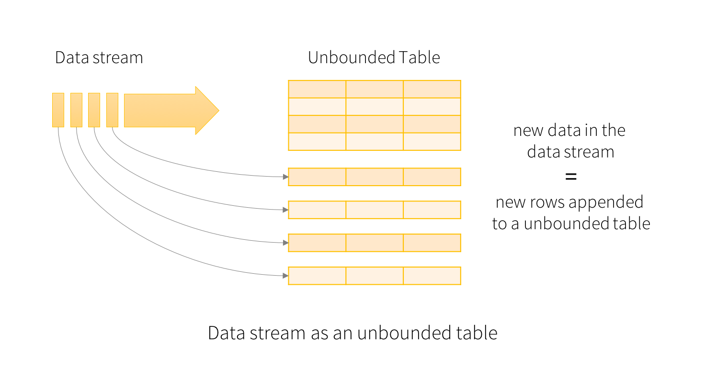

Streaming
https://aitor-medrano.github.io/iabd/spark/streaming.html
Apache Spark Streaming es una extensión de Apache Spark que permite el procesamiento de flujos de datos en tiempo real. A diferencia del procesamiento por lotes tradicional, que maneja grandes cantidades de datos en bloques, Spark Streaming permite procesar datos de forma continua y en tiempo real a medida que se van generando. Esto lo hace ideal para aplicaciones que requieren procesamiento inmediato de datos, como monitoreo en tiempo real, análisis de logs, y sistemas de recomendación en tiempo real.
Los datos se pueden ingestar desde diversas fuentes de datos, como Kafka, sockets TCP, etc.. y se pueden procesar mediante funciones de alto nivel, ya sea mediante el uso de RDD y algoritmos MapReduce, o utilizando DataFrames y la sintaxis SQL. Finalmente, los datos procesados se almacenan en sistemas de ficheros, bases de datos o cuadros de mandos.

Comando ncat (nc)
Permite acceder a puertos TCP o UDP de la propia máquina o de otras máquinas remotas. También permite quedar a la escucha en un puerto dado (TCP o UDP) de la máquina local.
Podemos utilizar a ncat como herramienta de escaneo de puertos, de seguridad o de monitoreo; además de como proxy TCP simple. Es muy útil para auditar la seguridad de sistemas, de servidores web, de servidores de correo, entre otros.
IMPORTANTE: Aunque se asemejan, ncat y netcat son programas diferentes. https://access.redhat.com/documentation/es-es/red_hat_enterprise_linux/7/html/migration_planning_guide/ch04s07s04
TLDR
Redirect I/O into a network stream through this versatile tool. More information: [https://manned.org/man/nc.1](https://manned.org/man/nc.1).
- Start a listener on the specified TCP port and send a file into it:
nc -l -p port < filename
- Connect to a target listener on the specified port and receive a file from it:
nc host port > received_filename
- Scan the open TCP ports of a specified host:
nc -v -z -w timeout_in_seconds host start_port-end_port
- Start a listener on the specified TCP port and provide your local shell access to the connected party (this is dangerous and can be abused):
nc -l -p port -e shell_executable
- Connect to a target listener and provide your local shell access to the remote party (this is dangerous and can be abused):
nc host port -e shell_executable
- Act as a proxy and forward data from a local TCP port to the given remote host:
nc -l -p local_port | nc host remote_port
- Send an HTTP GET request:
echo -e "GET / HTTP/1.1\nHost: host\n\n" | nc host 80
Funcionamiento
Cuando funciona como cliente, nc crea un socket para conectarse al puerto indicado de la máquina destino.
La conexión permenecerá abierta mientras no la finalice el servidor o el cliente nc (CONTROL+C)
Cuando funciona como servidor (modo escucha [opción -l, listen]), abre un socket en la máquina local que queda a la escucha en el puerto indicado
En ambos casos, una vez establecida la conexión, nc envía a través del socket creado todo lo que reciba por la entrada estándar y envía a la salida estándar lo que le llegue por el socket.
Opciones interesantes:
-u usa el modo UDP (por defecto son conexiones TCP)
-c comando / -e ejecutable ejecuta un comando/programa una vez iniciada la conexión cuyas entrada y salida estándar están redirigidas a la conexión establecida
Ejemplo: Enviar - Recibir
# En una terminal escuchamos
nc -l -p 999 # En mac sin -p
# En otra terminal enviamos
nc localhost 999
Ejemplo: Copia de ficheros
* Intentar con linux *
# Abrimos un terminal, se queda a la escucha
nc localhost 88 > destino.txt
# Abrimos otro termina, creamos un fichero y lo mandamos al primer terminal
echo "aa\nb\ncc\ndd" > origen.txt
nc localhost 88 < origen.txt
Ejemplo con python:
# En un terminal
# Opción k -> keep open, mantiene la conexión abierta incluso después de recibir datos.
nc -lk 88
import socket
import time
import random
def enviar_palabra(palabra, host='localhost', puerto=88):
# Crear un socket TCP/IP
cliente_socket = socket.socket(socket.AF_INET, socket.SOCK_STREAM)
try:
# Conectar al servidor netcat
cliente_socket.connect((host, puerto))
# Enviar la palabra al servidor
palabra = palabra + '\n'
cliente_socket.sendall(palabra.encode())
# Esperar X segundos
intervalo = random.uniform(0.5, 2)
time.sleep(intervalo)
finally:
# Cerrar la conexión
cliente_socket.close()
if __name__ == "__main__":
palabras = ["hola", "mundo", "python", "netcat", "socket"]
palabras = palabras * 2
for palabra in palabras:
enviar_palabra(palabra)
La línea "if name == "main":" es una forma de asegurarse de que cierto código se ejecute solo cuando el archivo Python se ejecuta directamente, y no cuando se importa como un módulo en otro script.
chatGPT
• __name__: Es una variable especial en Python. Cuando un archivo se ejecuta como un script, __name__ toma el valor "__main__". Pero si el archivo es importado como un módulo en otro script, __name__ tomará el nombre del archivo (sin la extensión .py).
• __main__: Es un valor especial asignado a __name__ cuando el script se ejecuta directamente. Esto significa que el bloque de código dentro de if __name__ == "__main__": solo se ejecutará si el archivo es ejecutado directamente (por ejemplo, con python archivo.py).
La función encode() se utiliza para convertir una cadena de caracteres (string) en su representación en bytes, utilizando un cierto esquema de codificación de caracteres. En el contexto de la comunicación a través de sockets o de la lectura/escritura de archivos, es importante trabajar con cadenas de bytes en lugar de cadenas de caracteres directamente, ya que muchos protocolos y sistemas de archivos operan a nivel de bytes.
https://www.w3schools.com/python/ref_string_encode.asp
Beginner’s Guide To Netcat for Hackers
https://www.youtube.com/watch?v=8oGm4pEAsd8
Caso 1: Hola Spark Streaming
Abrimos un terminal desde donde enviaremos los mensajes:
Tras arrancar Netcat, ya podemos crear nuestra aplicación Spark (vamos a indicar que cree 2 hilos, lo cual es el mínimo necesario para realizar streaming, uno para recibir y otro para procesar), en la cual tenemos diferenciadas:
- la fuente de datos: creación del flujo de lectura mediante
readStreamque devuelve un DataStreamReader que utilizaremos para cargar un DataFrame. - la lógica de procesamiento, ya sea mediante DataFrames API o Spark SQL.
- la persistencia de los datos mediante writeStream que devuelve un DataStreamWriter donde indicamos el modo de salida, el cual, al iniciarlo con
startnos devuelve un StreamingQuery - y finalmente el cierre del flujo de datos a partir de la consult en streaming mediante
awaitTermination.
En un cuaderno jupyter….
''' Streaming1.ipynb '''
from pyspark.sql import SparkSession
spark = SparkSession \
.builder \
.appName("Streaming IABD WordCount") \
.master("local[2]") \
.getOrCreate()
# Creamos un flujo de escucha sobre netcat en localhost:9999
# En Spark Streaming, la lectura se realiza mediante readStream
lineasDF = spark.readStream \
.format("socket") \
.option("host", "IP_MAQUINA") \ # Ponemos IP local de la máquina
.option("port", "9999") \
.load()
# Leemos las líneas y las pasamos a palabras.
# Sobre ellas, realizamos la agrupación count (transformación)
from pyspark.sql.functions import explode, split
palabrasDF = lineasDF.select(explode(split(lineasDF.value, ' ')).alias('palabra'))
cantidadDF = palabrasDF.groupBy("palabra").count()
# Mostramos las palabras por consola (sink)
# En Spark Streaming, la persistencia se realiza mediante writeStream
# y en vez de realizar un save, ahora utilizamos start
wordCountQuery = cantidadDF.writeStream \
.format("console") \
.outputMode("complete") \
.start()
# dejamos Spark a la escucha
wordCountQuery.awaitTermination()
Elementos
La idea básica al trabajar los datos en streaming es similar a tener una tabla de entrada de tamaño ilimitado, y conforme llegan nuevos datos, tratarlos como un nuevo conjunto de filas que se adjuntan a la tabla.

Fuentes de Datos
Mientras que en el procesamiento batch las fuentes de datos son datasets estáticos que residen en un almacenamiento como pueda ser un sistema local, HDFS o S3, al hablar de procesamiento en streaming las fuentes de datos generan los datos de forma continuada, por lo que necesitamos otro tipo de fuentes.
Structured Streaming ofrece un conjunto predefinido de fuentes de datos que se leen a partir de un DataStreamReader. Los tipos existentes son:
Fichero: permite leer ficheros desde un directorio como un flujo de datos, con soporte para ficheros de texto, CSV, JSON, Parquet, ORC, etc…
# Lee todos los ficheros csv de un directorio
esquemaUsuario = StructType() \
.add("nombre", "string").add("edad", "integer")
csvDF = spark.readStream \
.option("sep", ";") \
.schema(esquemaUsuario) \
.csv("/path/al/directorio") # equivalente a format("csv").load("/path/al/directorio")
Socket: lee texto UTF8 desde una conexión socket (es el que hemos utilizado en el caso de uso 1). Sólo se debe utilizar para pruebas ya que no ofrece garantía de tolerancia de fallos de punto a punto.
socketDF = spark.readStream \
.format("socket") \
.option("host", "localhost") \
.option("port", 9999) \
.load()
Rate: Genera datos indicando una cantidad de filas por segundo, donde cada fila contiene un timestamp y el valor de un contador secuencial (la primera fila contiene el 0). Esta fuente también se utiliza para la realización de pruebas y benchmarking.
Tabla (desde Spark 3.1): Carga los datos desde una tabla temporal de SparkSQL, la cual podemos utilizar tanto para cargar como para persistir los cálculos realizados. Más información en la documentación oficial.
Sinks
El término "sinks" se refiere a las operaciones de escritura de datos que se realizan al final de un proceso de streaming o transformación de datos. Un "sink" (o "destino" en español) en PySpark es el lugar donde se envían los datos procesados para su almacenamiento o uso posterior.
Escriben a partir de un DataStreamWriter mediante el interfaz writeStream
Fichero: Podemos almacenar los resultados en un sistema de archivos, HDFS o S3, con soporte para los formatos CSV, JSON, ORC y Parquet.
# Otros valores pueden ser "json", "csv", etc...
df.writeStream.format("parquet") \
.option("path", "/path/al/directorio") \
.start()
Kafka: Envía los datos a un clúster de Kafka:
df.writeStream.format("kafka") \
.option("kafka.bootstrap.servers", "host1:port1,host2:port2")
.option("topic", "miTopic")
.start()
Foreach y ForeachBatch: permiten realizar operaciones y escribir lógica sobre la salida de una consulta de streaming, ya sea a nivel de fila (foreach) como a nivel de micro-batch (foreachBatch). Más información en la documentación oficial.
Consola: se emplea para pruebas y depuración y permite mostrar el resultado por consola.
Admite las opciones numRows para indicar las filas a mostrar y truncate para truncar los datos si las filas son muy largas.
Memoria: se emplea para pruebas y depuración, ya que sólo permite un volumen pequeño de datos para evitar un problema de falta de memoria en el driver para almacenar la salida. Los datos se almacenan en una tabla temporal a la cual podemos acceder desde SparkSQL:
Modos de salida
El modo de salida determina cómo salen los datos a un sumidero de datos. Existen tres opciones:
- Añadir (
*append*): para insertar los datos, cuando sabemos que no vamos a modificar ninguna salida anterior, y que cada batch únicamente escribirá nuevos registros. Es el modo por defecto. - Modificar (
*update*): similar a un upsert, donde veremos solo registros que, bien son nuevos, bien son valores antiguos que debemos modificar. - Completa (
*complete*): para sobrescribir completamente el resultado, de manera que siempre recibimos la salida completa.
En el caso 1 hemos utilizado el modo de salida completa, de manera que con cada dato nuevo, se mostraba como resultado todas las palabras y su cantidad. Si hubiésemos elegido el modo update, en cada micro-batch solo se mostraría el resultado acumulado de cada batch.
Ejercicio
- Abrimos nc -lk -p 9999
- Duplicamos Streaming1.ipynb a Streaming2.ipynb
- Iniciamos
-
Mandamos dos frases
Esta es la primera frase
Enviamos segunda linea primera
-------------------------------------------
Batch: 2
-------------------------------------------
+--------+-----+
| palabra|count|
+--------+-----+
| frase| 1|
| segunda| 1|
| es| 1|
| linea| 1|
| Esta| 1|
| la| 1|
|Enviamos| 1|
| primera| 1|
+--------+-----+
- Modificamos el código del ejercicio, detenemos todo, volvemos a iniciar
- Mandamos las mismas frases
-------------------------------------------
Batch: 2
-------------------------------------------
+--------+-----+
| palabra|count|
+--------+-----+
| segunda| 1|
| linea| 1|
| la| 2|
|Enviamos| 1|
+--------+-----+
- Modificamos el código del ejercicio, detenemos todo, volvemos a iniciar
Con este ejemplo, el modo append no tiene sentido (ya que para contar las palabras necesitamos las anteriores), y Spark es tan listo que cuando realizamos agregaciones no permite su uso y lanza una excepción del tipo AnalysisException:
AnalysisException: Append output mode not supported when there are streaming aggregations on streaming DataFrames/DataSets without watermark;
En resumen, el modo append es sólo para inserciones, update para modificaciones e inserciones y finalmente complete sobrescribe los resultados previos.
Además, no todos los tipos de salida se pueden aplicar siempre, va a depender del tipo de operaciones que realicemos.
Transformaciones
-
Sin estado (stateless): los datos de cada micro-batch son independientes de los anteriores, y por tanto, podemos realizar las transformaciones
select,filter,map,flatMap,explode. Es importante destacar que estas transformaciones no soportan el modo de salida complete, por lo que sólo podemos utilizar los modos append o update. -
Con estado (stateful): aquellas que implica realizar agrupaciones, agregaciones, windowing y/o joins, ya que mantienen el estado entre los diferentes micro-batches. Destacar que un abuso del estado puede causar problemas de falta de memoria, ya que el estado se almacena en la memoria de los ejecutores (executors). Por ello, Spark ofrece dos tipos de operaciones con estado:
- Gestionadas (managed): Spark gestiona el estado y libera la memoria conforme sea necesario.
- Sin gestionar (unmanaged): permite que el desarrollador defina las políticas de limpieza del estado (y su liberación de memoria), por ejemplo, a partir de políticas basadas en el tiempo. A día de hoy, las transformación sin gestionar sólo están disponibles mediante Java o Scala.
Además, hay que tener en cuenta que no todas las operaciones que realizamos con DataFrames están soportadas al trabajar en streaming, como pueden ser show, describe, count (aunque sí que podemos contar sobre agregaciones/funciones ventana), limit, distinct, cube o sort (podemos ordenar en algunos casos después de haber realizado una agregación), ya que los datos no están acotados y provocará una excepción del tipo AnalysisException.
Triggers
Un trigger define el intervalo (timing) temporal de procesamiento de los datos en streaming, indicando si la consulta se ejecutará como un micro-batch mediante un intervalo fijo o con una consulta con procesamiento continuo.
Así pues, un trigger es un mecanismo para que el motor de Spark SQL determine cuando ejecutar la computación en streaming.
Los posibles tipos son:
- Sin especificar, de manera que cada micro-batch se va a ejecutar tan pronto como lleguen datos.
- Por intervalo de tiempo, mediante la propiedad processingTime. Si indicamos un intervalo de un minuto, una vez finalizado un job, si no ha pasado un minuto, se esperará a ejecutarse. Si el micro-batch tardase más de un minuto, el siguiente se ejecutaría inmediatamente. Así pues, de esta manera, Spark permite colectar datos de entrada y procesarlos de manera conjunta (en vez de procesar individualmente cada registro de entrada).
- Un intervalo, mediante la propiedad once, de manera que funciona como un proceso batch estándar, creando un único proceso micro-batch, o con la propiedad availableNow para leer todos los datos disponibles hasta el momento mediante múltiples batches.
- Continuo, mediante la propiedad continuous, para permitir latencias del orden de milisegundos mediante Continuous Processing. Se trata de una opción experimental desde la versión 2.3 de Spark.
Los triggers se configuran al persistir el DataFrame, tras indicar el modo de salida mediante el método trigger:
Ejercicio: Modifica Streaming2.ipynb